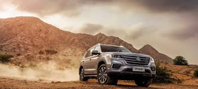

information about MG
MG Cars is a British car brand founded by Cecil Kimber in the 1920s, and MG Motor Company Limited. It is the British sports car manufacturer that made the brand famous.
MG is best known for its open two-seater sports cars, and also produced saloons and coupés, with engines up to three litres. The brand is now owned by the Chinese automobile company SAIC Motor Limited.
MG's roots can be traced back to a sales promotion in the 1920s by Morris Garage, a retail and service centre in Oxford belonging to William Morris. The business manager, Cecil Kimber, modified the standard production Morris Oxford and added MG Super Sports to the front of the car, i.e. separate MG.
The Motor Company Limited was established in July 1930. It remained the personal property of Morris until 1 July 1935, when he sold it to his holding company, Morris Motors.
MG has undergone several changes in ownership over the years. The Morris organisation merged with the Austin organisation to create the British Motor Company Limited (BMC) in 1952. Its activities were renamed the MG division of British Motor Company Limited in 1967, and were thus part of the 1968 merger that created British Leyland Motor Company (BLMC). The MG brand continued to be used by the successors of British Leyland Motor Company and the Rover Group, and by the early 2000s, the EG Rover Group, which was taken over in 2005 by Nanjing Motor Group (which merged into SAIC in 2007). MG production resumed in 2007 in China. The first new MG model, the MG6, was launched in the UK in 16 years, on 26 June 2011.
MG photos

.jfif)